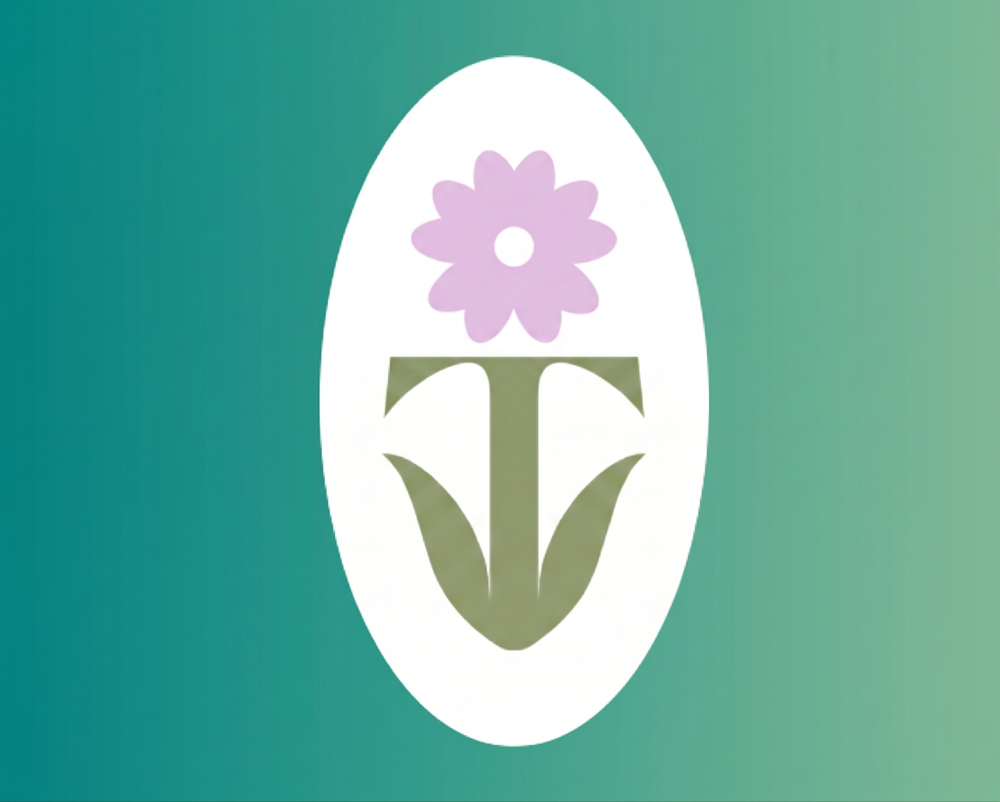

T'IKAYBrindamos atención especializada en psicología y terapias integrales para niños, adolescentes y adultos. Acompañamos el bienestar de tu familia con calidez humana, desde nuestras instalaciones en Urubamba o en sesiones online personalizadas.
Integramos la calidez de nuestra comunidad en el Valle Sagrado con métodos terapéuticos respaldados por la evidencia científica.
Creamos un entorno libre de juicios donde cada persona es escuchada, respetada y validada en su proceso individual.
Combinamos técnicas neuropsicológicas y de aprendizaje con herramientas lúdicas, artísticas y sensoriales.
Sesiones presenciales en nuestro consultorio en Urubamba o sesiones virtuales cómodas desde cualquier lugar del mundo.
Brindamos orientación constante a los padres y cuidadores para asegurar la continuidad de los avances en casa.
Selecciona un área para conocer el enfoque, la modalidad de atención y agendar una consulta.
Acompañamos a tus pequeños en su desarrollo emocional y social. Utilizamos el juego, los colores y la creatividad en nuestros espacios físicos para brindarles herramientas prácticas que les permitan manejar la ansiedad, superar miedos y fortalecer su autoestima.
Conocer Más y AgendarApoyo especializado para transitar los cambios de esta etapa vital. Creamos un espacio de escucha activa (en consultorio o videollamada) donde fortalecemos la identidad, la autoconfianza y la gestión sana de emociones y relaciones interpersonales.
Conocer Más y AgendarUn espacio seguro, confidencial y libre de juicios para abordar el estrés, la ansiedad, crisis vitales o conflictos personales. Promovemos el bienestar integral y el autoconocimiento adaptándonos a tus horarios.
Conocer Más y AgendarDiseñamos estrategias dinámicas para superar dificultades escolares (dislexia, concentración, hábitos de estudio). Potenciamos las habilidades de cada persona respetando su ritmo único de desarrollo.
Conocer Más y AgendarEvaluación y tratamiento lúdico para dificultades de comunicación, pronunciación y expresión oral. Trabajamos con ejercicios especializados y seguimiento cercano para que la voz de cada paciente logre florecer.
Conocer Más y AgendarConectamos con la creatividad utilizando colores, texturas y formas para facilitar la expresión emocional profunda. Es una vía poderosa para desbloquear tensiones y procesar vivencias sin necesidad de palabras.
Conocer Más y AgendarEvaluación especializada y estimulación de funciones cognitivas clave como la memoria, la atención y las funciones ejecutivas. Diseñamos planes terapéuticos estructurados para optimizar el rendimiento global.
Conocer Más y AgendarNos encontramos en el corazón del Valle Sagrado. ¡Te esperamos con un espacio cómodo y seguro!
Un espacio acogedor diseñado especialmente para la tranquilidad de niños, jóvenes y familias.